《招聘一个靠谱的 iOS》—参考答案（上）
说明：面试题来源是微博@我就叫Sunny怎么了的这篇博文：《招聘一个靠谱的 iOS》，其中共55题，除第一题为纠错题外，其他54道均为简答题。
博文中给出了高质量的面试题，但是未给出答案，我尝试着总结了下答案，分两篇发：这是上篇 ，下一篇文章将发布在这里，会把剩余问题总结下，并且进行勘误，欢迎各位指正文中的错误。请持续关注微博@iOS程序犭袁。（答案未经出题者校对，如有纰漏，请向微博@iOS程序犭袁指正。）
出题者简介： 孙源（sunnyxx），目前就职于百度，负责百度知道 iOS 客户端的开发工作，对技术喜欢刨根问底和总结最佳实践，热爱分享和开源，维护一个叫 forkingdog 的开源小组。
1. 风格纠错题

修改方法有很多种，现给出一种做示例：
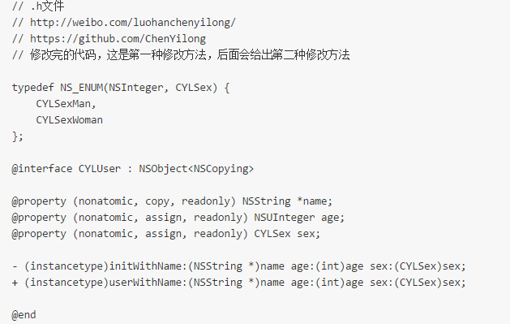
下面对具体修改的地方，分两部分做下介绍：硬伤部分和优化部分 。因为硬伤部分没什么技术含量，为了节省大家时间，放在后面讲，大神请直接看优化部分。
优化部分
1）enum建议使用 NS_ENUM 和 NS_OPTIONS 宏来定义枚举类型，参见官方的 Adopting Modern Objective-C 一文：
//定义一个枚举
typedef NS_ENUM(NSInteger, CYLSex) {
CYLSexMan,
CYLSexWoman
};2）age属性的类型：应避免使用基本类型，建议使Foundation数据类型，对应关系如下：
int -> NSInteger unsigned -> NSUInteger float -> CGFloat 动画时间 -> NSTimeInterval
同时考虑到age的特点，应使用NSUInteger，而非int。 这样做的是基于64-bit 适配考虑，详情可参考出题者的博文《64-bit Tips》。
3）如果工程项目非常庞大，需要拆分成不同的模块，可以在类、typedef宏命名的时候使用前缀。
4）doLogIn方法不应写在该类中：虽然LogIn的命名不太清晰，但笔者猜测是login的意思，而登录操作属于业务逻辑，观察类名UserModel，以及属性的命名方式，应该使用的是MVC模式，并非MVVM，在MVC中业务逻辑不应当写在Model中。（如果是MVVM，抛开命名规范，UserModel这个类可能对应的是用户注册页面，如果有特殊的业务需求，比如：login对应的应当是注册并登录的一个Button，出现login方法也可能是合理的。）
5）doLogIn方法命名不规范：添加了多余的动词前缀。 请牢记：
如果方法表示让对象执行一个动作，使用动词打头来命名，注意不要使用do，does这种多余的关键字，动词本身的暗示就足够了。
6）-(id)initUserModelWithUserName: (NSString*)name withAge:(int)age;方法中不要用with来连接两个参数:withAge:应当换为age:，age:已经足以清晰说明参数的作用，也不建议用andAge:：通常情况下，即使有类似withA:withB:的命名需求，也通常是使用withA:andB:这种命名，用来表示方法执行了两个相对独立的操作（从设计上来说，这时候也可以拆分成两个独立的方法），它不应该用作阐明有多个参数，比如下面的：
//错误，不要使用"and"来连接参数 - (int)runModalForDirectory:(NSString *)path andFile:(NSString *)name andTypes:(NSArray *)fileTypes; //错误，不要使用"and"来阐明有多个参数 - (instancetype)initWithName:(CGFloat)width andAge:(CGFloat)height; //正确，使用"and"来表示两个相对独立的操作 - (BOOL)openFile:(NSString *)fullPath withApplication:(NSString *)appName andDeactivate:(BOOL)flag;
7）由于字符串值可能会改变，所以要把相关属性的“内存管理语义”声明为copy。(原因在下文有详细论述：用@property声明的NSString（或NSArray，NSDictionary）经常使用copy关键字，为什么？)
8）“性别”(sex）属性的：该类中只给出了一种“初始化方法” (initializer)用于设置“姓名”(Name)和“年龄”(Age)的初始值，那如何对“性别”(Sex）初始化？
Objective-C 有 designated 和 secondary 初始化方法的观念。 designated 初始化方法是提供所有的参数，secondary 初始化方法是一个或多个，并且提供一个或者更多的默认参数来调用 designated 初始化方法的初始化方法。举例说明：
// .m文件
// http://weibo.com/luohanchenyilong/
// https://github.com/ChenYilong
//
@implementation CYLUser
- (instancetype)initWithName:(NSString *)name
age:(int)age
sex:(CYLSex)sex {
if(self = [super init]) {
_name = [name copy];
_age = age;
_sex = sex;
}
return self;
}
- (instancetype)initWithName:(NSString *)name
age:(int)age {
return [self initWithName:name age:age sex:nil];
}
@end上面的代码中initWithName:age:sex: 就是 designated 初始化方法，另外的是 secondary 初始化方法。因为仅仅是调用类实现的 designated 初始化方法。
因为出题者没有给出.m文件，所以有两种猜测：1：本来打算只设计一个designated 初始化方法，但漏掉了“性别”(sex）属性。那么最终的修改代码就是上文给出的第一种修改方法。2：不打算初始时初始化“性别”(sex）属性，打算后期再修改，如果是这种情况，那么应该把“性别”(sex）属性设为readwrite属性，最终给出的修改代码应该是：
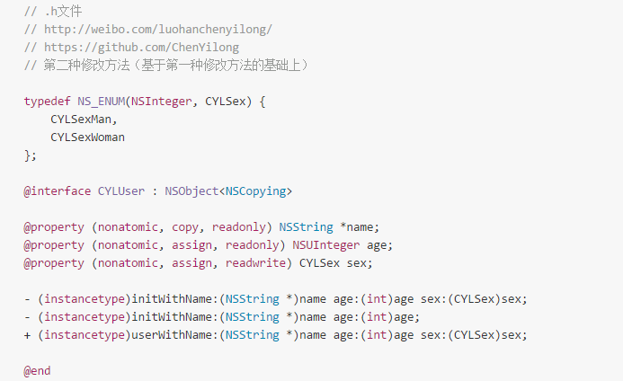
.h中暴露 designated 初始化方法，是为了方便子类化 （想了解更多，请戳--》 《禅与 Objective-C 编程艺术 （Zen and the Art of the Objective-C Craftsmanship 中文翻译）》。）
9）按照接口设计的惯例，如果设计了“初始化方法” (initializer)，也应当搭配一个快捷构造方法。而快捷构造方法的返回值，建议为instancetype，为保持一致性，init方法和快捷构造方法的返回类型最好都用instancetype。
10）如果基于第一种修改方法：既然该类中已经有一个“初始化方法” (initializer)，用于设置“姓名”(Name)、“年龄”(Age)和“性别”(Sex）的初始值: 那么在设计对应@property时就应该尽量使用不可变的对象：其三个属性都应该设为“只读”。用初始化方法设置好属性值之后，就不能再改变了。在本例中，仍需声明属性的“内存管理语义”。于是可以把属性的定义改成这样
@property (nonatomic, copy, readonly) NSString *name; @property (nonatomic, assign, readonly) NSUInter age; @property (nonatomic, assign, readonly) CYLSex sex;
由于是只读属性，所以编译器不会为其创建对应的“设置方法”，即便如此，我们还是要写上这些属性的语义，以此表明初始化方法在设置这些属性值时所用的方式。要是不写明语义的话，该类的调用者就不知道初始化方法里会拷贝这些属性，他们有可能会在调用初始化方法之前自行拷贝属性值。这种操作多余而且低效。
11）initUserModelWithUserName如果改为initWithName会更加简洁，而且足够清晰。
12）UserModel如果改为User会更加简洁，而且足够清晰。
13）UserSex如果改为Sex会更加简洁，而且足够清晰。
硬伤部分
1）在-和(void)之间应该有一个空格
2）enum中驼峰命名法和下划线命名法混用错误：枚举类型的命名规则和函数的命名规则相同：命名时使用驼峰命名法，勿使用下划线命名法。
3）enum左括号前加一个空格，或者将左括号换到下一行
4）enum右括号后加一个空格
5）UserModel :NSObject 应为UserModel : NSObject，也就是:右侧少了一个空格。
6）@interface与@property属性声明中间应当间隔一行。
7）两个方法定义之间不需要换行，有时为了区分方法的功能也可间隔一行，但示例代码中间隔了两行。
8）-(id)initUserModelWithUserName: (NSString*)name withAge:(int)age;方法中方法名与参数之间多了空格。而且- 与(id)之间少了空格。
9）-(id)initUserModelWithUserName: (NSString*)name withAge:(int)age;方法中方法名与参数之间多了空格：(NSString*)name前多了空格。
10）-(id)initUserModelWithUserName: (NSString*)name withAge:(int)age;方法中(NSString*)name,应为(NSString *)name，少了空格。
11）doLogIn方法命名不清晰：笔者猜测是login的意思，应该是粗心手误造成的。
12）第二个@property中assign和nonatomic调换位置。
2. 什么情况使用 weak 关键字，相比 assign 有什么不同？
什么情况使用 weak 关键字？
1）在ARC中,在有可能出现循环引用的时候,往往要通过让其中一端使用weak来解决,比如:delegate代理属性
2）自身已经对它进行一次强引用,没有必要再强引用一次,此时也会使用weak,自定义IBOutlet控件属性一般也使用weak；当然，也可以使用strong。在下文也有论述：《IBOutlet连出来的视图属性为什么可以被设置成weak?》
不同点：
1）weak 此特质表明该属性定义了一种“非拥有关系” (nonowning relationship)。为这种属性设置新值时，设置方法既不保留新值，也不释放旧值。此特质同assign类似， 然而在属性所指的对象遭到摧毁时，属性值也会清空(nil out)。 而 assign 的“设置方法”只会执行针对“纯量类型” (scalar type，例如 CGFloat 或 NSlnteger 等)的简单赋值操作。
2）assigin 可以用非OC对象,而weak必须用于OC对象
3. 怎么用 copy 关键字？
用途：
1）NSString、NSArray、NSDictionary 等等经常使用copy关键字，是因为他们有对应的可变类型：NSMutableString、NSMutableArray、NSMutableDictionary；
2）block也经常使用copy关键字，具体原因见官方文档：Objects Use Properties to Keep Track of Blocks：
block使用copy是从MRC遗留下来的“传统”,在MRC中,方法内部的block是在栈区的,使用copy可以把它放到堆区.在ARC中写不写都行：对于block使用copy还是strong效果是一样的，但写上copy也无伤大雅，还能时刻提醒我们：编译器自动对block进行了copy操作。
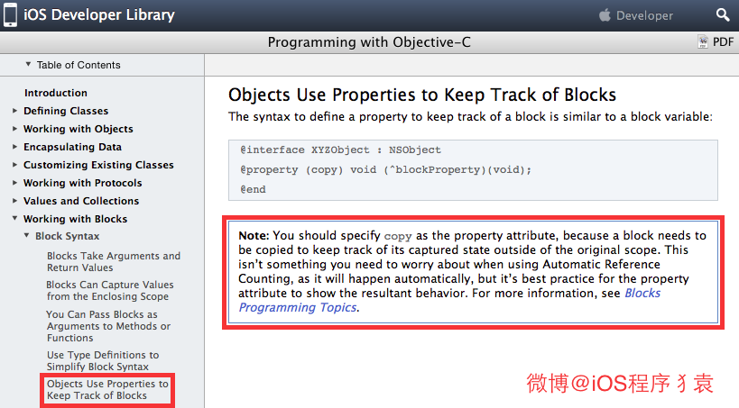
下面做下解释： copy此特质所表达的所属关系与strong类似。然而设置方法并不保留新值，而是将其“拷贝” (copy)。 当属性类型为NSString时，经常用此特质来保护其封装性，因为传递给设置方法的新值有可能指向一个NSMutableString类的实例。这个类是NSString的子类，表示一种可修改其值的字符串，此时若是不拷贝字符串，那么设置完属性之后，字符串的值就可能会在对象不知情的情况下遭人更改。所以，这时就要拷贝一份“不可变” (immutable)的字符串，确保对象中的字符串值不会无意间变动。只要实现属性所用的对象是“可变的” (mutable)，就应该在设置新属性值时拷贝一份。
用@property声明 NSString、NSArray、NSDictionary 经常使用copy关键字，是因为他们有对应的可变类型：NSMutableString、NSMutableArray、NSMutableDictionary，他们之间可能进行赋值操作，为确保对象中的字符串值不会无意间变动，应该在设置新属性值时拷贝一份。
该问题在下文中也有论述：用@property声明的NSString（或NSArray，NSDictionary）经常使用copy关键字，为什么？如果改用strong关键字，可能造成什么问题？
4. 这个写法会出什么问题： @property (copy) NSMutableArray *array;
两个问题：
1、添加,删除,修改数组内的元素的时候,程序会因为找不到对应的方法而崩溃.因为copy就是复制一个不可变NSArray的对象；
2、使用了atomic属性会严重影响性能。
第1条的相关原因在下文中有论述《用@property声明的NSString（或NSArray，NSDictionary）经常使用copy关键字，为什么？如果改用strong关键字，可能造成什么问题？》 以及上文《怎么用 copy 关键字？》也有论述。
第2条原因，如下：
该属性使用了同步锁，会在创建时生成一些额外的代码用于帮助编写多线程程序，这会带来性能问题，通过声明nonatomic可以节省这些虽然很小但是不必要额外开销。
在默认情况下，由编译器所合成的方法会通过锁定机制确保其原子性(atomicity)。如果属性具备nonatomic特质，则不使用同步锁。请注意，尽管没有名为“atomic”的特质(如果某属性不具备nonatomic特质，那它就是“原子的”(atomic))。
在iOS开发中，你会发现，几乎所有属性都声明为nonatomic。
一般情况下并不要求属性必须是“原子的”，因为这并不能保证“线程安全” ( thread safety)，若要实现“线程安全”的操作，还需采用更为深层的锁定机制才行。例如，一个线程在连续多次读取某属性值的过程中有别的线程在同时改写该值，那么即便将属性声明为atomic，也还是会读到不同的属性值。
因此，开发iOS程序时一般都会使用nonatomic属性。但是在开发Mac OS X程序时，使用 atomic属性通常都不会有性能瓶颈。
5. 如何让自己的类用 copy 修饰符？如何重写带 copy 关键字的 setter？
若想令自己所写的对象具有拷贝功能，则需实现NSCopying协议。如果自定义的对象分为可变版本与不可变版本，那么就要同时实现NSCopyiog与NSMutableCopying协议。
具体步骤：
1）需声明该类遵从NSCopying协议
2）实现NSCopying协议。该协议只有一个方法:
- (id)copyWithZone: (NSZone*) zone
注意：一提到让自己的类用 copy 修饰符，我们总是想覆写copy方法，其实真正需要实现的却是“copyWithZone”方法。
以第一题的代码为例：
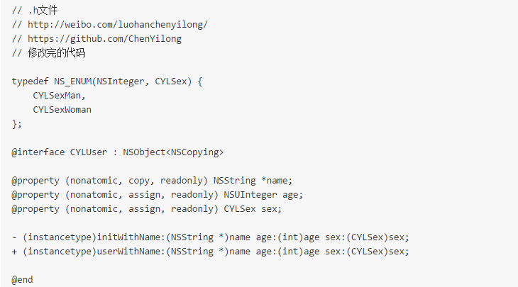
然后实现协议中规定的方法：
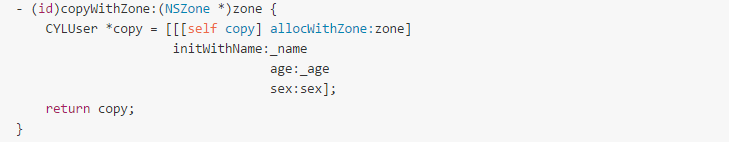
但在实际的项目中，不可能这么简单，遇到更复杂一点，比如类对象中的数据结构可能并未在初始化方法中设置好，需要另行设置。举个例子，假如CYLUser中含有一个数组，与其他CYLUser对象建立或解除朋友关系的那些方法都需要操作这个数组。那么在这种情况下，你得把这个包含朋友对象的数组也一并拷贝过来。下面列出了实现此功能所需的全部代码:
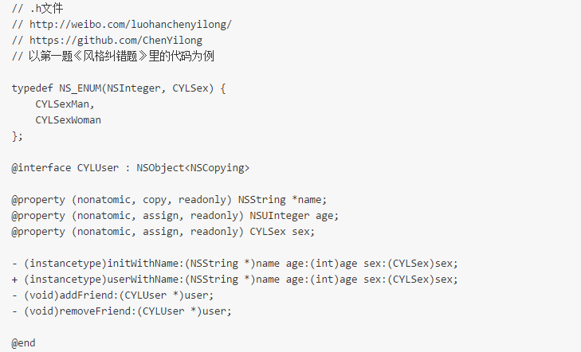
// .m文件
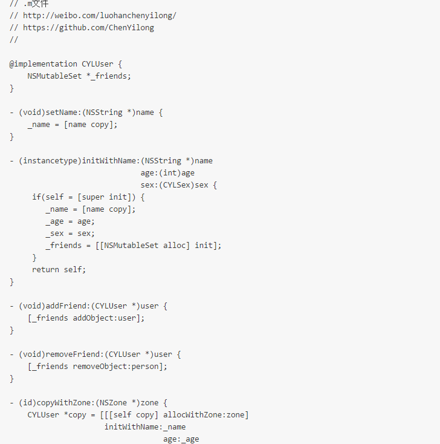
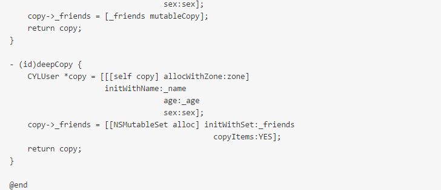
以上做法能满足基本的需求，但是也有缺陷：如果你所写的对象需要深拷贝，那么可考虑新增一个专门执行深拷贝的方法。
【注：深浅拷贝的概念，在下文中有介绍，详见下文的：用@property声明的NSString（或NSArray，NSDictionary）经常使用copy关键字，为什么？如果改用strong关键字，可能造成什么问题？】
在例子中，存放朋友对象的set是用“copyWithZooe:”方法来拷贝的，这种浅拷贝方式不会逐个复制set中的元素。若需要深拷贝的话，则可像下面这样，编写一个专供深拷贝所用的方法:
- (id)deepCopy {
CYLUser *copy = [[[self copy] allocWithZone:zone]
initWithName:_name
age:_age
sex:sex];
copy->_friends = [[NSMutableSet alloc] initWithSet:_friends
copyItems:YES];
return copy;
}至于如何重写带 copy 关键字的 setter这个问题，
如果抛开本例来回答的话，如下：
- (void)setName:(NSString *)name {
_name = [name copy];
}如果单单就上文的代码而言，我们不需要也不能重写name的 setter ：由于是name是只读属性，所以编译器不会为其创建对应的“设置方法”，用初始化方法设置好属性值之后，就不能再改变了。（ 在本例中，之所以还要声明属性的“内存管理语义”--copy，是因为：如果不写copy，该类的调用者就不知道初始化方法里会拷贝这些属性，他们有可能会在调用初始化方法之前自行拷贝属性值。这种操作多余而低效。）。
那如何确保name被copy？在初始化方法(initializer)中做：
- (instancetype)initWithName:(NSString *)name
age:(int)age
sex:(CYLSex)sex {
if(self = [super init]) {
_name = [name copy];
_age = age;
_sex = sex;
_friends = [[NSMutableSet alloc] init];
}
return self;
}6. @property 的本质是什么？ivar、getter、setter 是如何生成并添加到这个类中的。
@property 的本质是什么？
@property = ivar + getter + setter;
下面解释下：
“属性” (property)有两大概念：ivar（实例变量）、存取方法（access method ＝ getter + setter）。
“属性” (property)作为 Objective-C 的一项特性，主要的作用就在于封装对象中的数据。 Objective-C 对象通常会把其所需要的数据保存为各种实例变量。实例变量一般通过“存取方法”(access method)来访问。其中，“获取方法” (getter)用于读取变量值，而“设置方法” (setter)用于写入变量值。这个概念已经定型，并且经由“属性”这一特性而成为Objective-C 2.0的一部分。 而在正规的 Objective-C 编码风格中，存取方法有着严格的命名规范。 正因为有了这种严格的命名规范，所以 Objective-C 这门语言才能根据名称自动创建出存取方法。其实也可以把属性当做一种关键字，其表示:
编译器会自动写出一套存取方法，用以访问给定类型中具有给定名称的变量。 所以你也可以这么说：
@property = getter + setter;
例如下面这个类：
@interface Person : NSObject @property NSString *firstName; @property NSString *lastName; @end
上述代码写出来的类与下面这种写法等效：
@interface Person : NSObject - (NSString *)firstName; - (void)setFirstName:(NSString *)firstName; - (NSString *)lastName; - (void)setLastName:(NSString *)lastName; @end
ivar、getter、setter 是如何生成并添加到这个类中的?
“自动合成”( autosynthesis)
完成属性定义后，编译器会自动编写访问这些属性所需的方法，此过程叫做“自动合成”( autosynthesis)。需要强调的是，这个过程由编译 器在编译期执行，所以编辑器里看不到这些“合成方法”(synthesized method)的源代码。除了生成方法代码 getter、setter 之外，编译器还要自动向类中添加适当类型的实例变量，并且在属性名前面加下划线，以此作为实例变量的名字。在前例中，会生成两个实例变量，其名称分别为 _firstName与_lastName。也可以在类的实现代码里通过 @synthesize语法来指定实例变量的名字.
@implementation Person @synthesize firstName = _myFirstName; @synthesize lastName = myLastName; @end
我为了搞清属性是怎么实现的,曾经反编译过相关的代码,大致生成了五个东西：
1）OBJC_IVAR_$类名$属性名称 ：该属性的“偏移量” (offset)，这个偏移量是“硬编码” (hardcode)，表示该变量距离存放对象的内存区域的起始地址有多远。
2）setter与getter方法对应的实现函数
3）ivar_list ：成员变量列表
4）method_list ：方法列表
5）prop_list ：属性列表
也就是说我们每次在增加一个属性,系统都会在ivar_list中添加一个成员变量的描述,在method_list中增加setter与getter方法的描述,在属性列表中增加一个属性的描述,然后计算该属性在对象中的偏移量,然后给出setter与getter方法对应的实现,在setter方法中从偏移量的位置开始赋值,在getter方法中从偏移量开始取值,为了能够读取正确字节数,系统对象偏移量的指针类型进行了类型强转.
7. @protocol 和 category 中如何使用 @property
1）在protocol中使用property只会生成setter和getter方法声明,我们使用属性的目的,是希望遵守我协议的对象能实现该属性
2）category 使用 @property 也是只会生成setter和getter方法的声明,如果我们真的需要给category增加属性的实现,需要借助于运行时的两个函数：
①objc_setAssociatedObject
②objc_getAssociatedObject
8. runtime 如何实现 weak 属性
要实现weak属性，首先要搞清楚weak属性的特点：
weak 此特质表明该属性定义了一种“非拥有关系” (nonowning relationship)。为这种属性设置新值时，设置方法既不保留新值，也不释放旧值。此特质同assign类似， 然而在属性所指的对象遭到摧毁时，属性值也会清空(nil out)。
那么runtime如何实现weak变量的自动置nil？
runtime 对注册的类， 会进行布局，对于 weak 对象会放入一个 hash 表中。 用 weak 指向的对象内存地址作为 key，当此对象的引用计数为0的时候会 dealloc，假如 weak 指向的对象内存地址是a，那么就会以a为键， 在这个 weak 表中搜索，找到所有以a为键的 weak 对象，从而设置为 nil。
我们可以设计一个函数（伪代码）来表示上述机制：
objc_storeWeak(&a;, b)函数：
objc_storeWeak函数把第二个参数--赋值对象（b）的内存地址作为键值key，将第一个参数--weak修饰的属性变量（a）的内存地址（&a;）作为value，注册到 weak 表中。如果第二个参数（b）为0（nil），那么把变量（a）的内存地址（&a;）从weak表中删除，
你可以把objc_storeWeak(&a;, b)理解为：objc_storeWeak(value, key)，并且当key变nil，将value置nil。
在b非nil时，a和b指向同一个内存地址，在b变nil时，a变nil。此时向a发送消息不会崩溃：在Objective-C中向nil发送消息是安全的。
而如果a是由assign修饰的，则： 在b非nil时，a和b指向同一个内存地址，在b变nil时，a还是指向该内存地址，变野指针。此时向a发送消息极易崩溃。
下面我们将基于objc_storeWeak(&a;, b)函数，使用伪代码模拟“runtime如何实现weak属性”：
// 使用伪代码模拟：runtime如何实现weak属性 // http://weibo.com/luohanchenyilong/ // https://github.com/ChenYilong id obj1; objc_initWeak(&obj1;, obj); /*obj引用计数变为0，变量作用域结束*/ objc_destroyWeak(&obj1;);
下面对用到的两个方法objc_initWeak和objc_destroyWeak做下解释：
总体说来，作用是： 通过objc_initWeak函数初始化“附有weak修饰符的变量（obj1）”，在变量作用域结束时通过objc_destoryWeak函数释放该变量（obj1）。
下面分别介绍下方法的内部实现：
objc_initWeak函数的实现是这样的：在将“附有weak修饰符的变量（obj1）”初始化为0（nil）后，会将“赋值对象”（obj）作为参数，调用objc_storeWeak函数。
obj1 = 0； obj_storeWeak(&obj1;, obj);
也就是说：
weak 修饰的指针默认值是 nil （在Objective-C中向nil发送消息是安全的）
然后obj_destroyWeak函数将0（nil）作为参数，调用objc_storeWeak函数。
objc_storeWeak(&obj1;, 0);
前面的源代码与下列源代码相同。
// 使用伪代码模拟：runtime如何实现weak属性 // http://weibo.com/luohanchenyilong/ // https://github.com/ChenYilong id obj1; obj1 = 0; objc_storeWeak(&obj1;, obj); /* ... obj的引用计数变为0，被置nil ... */ objc_storeWeak(&obj1;, 0);
objc_storeWeak函数把第二个参数--赋值对象（obj）的内存地址作为键值，将第一个参数--weak修饰的属性变量（obj1）的内存地址注册到 weak 表中。如果第二个参数（obj）为0（nil），那么把变量（obj1）的地址从weak表中删除，在后面的相关一题会详解。
使用伪代码是为了方便理解，下面我们“真枪实弹”地实现下：
如何让不使用weak修饰的@property，拥有weak的效果。
我们从setter方法入手：
- (void)setObject:(NSObject *)object
{
objc_setAssociatedObject(self, "object", object, OBJC_ASSOCIATION_ASSIGN);
[object cyl_runAtDealloc:^{
_object = nil;
}];
}也就是有两个步骤：
1）在setter方法中做如下设置：
objc_setAssociatedObject(self, "object", object, OBJC_ASSOCIATION_ASSIGN);
2）在属性所指的对象遭到摧毁时，属性值也会清空(nil out)。做到这点，同样要借助runtime：
//要销毁的目标对象 id objectToBeDeallocated; //可以理解为一个“事件”：当上面的目标对象销毁时，同时要发生的“事件”。 id objectWeWantToBeReleasedWhenThatHappens; objc_setAssociatedObject(objectToBeDeallocted, someUniqueKey, objectWeWantToBeReleasedWhenThatHappens, OBJC_ASSOCIATION_RETAIN);
知道了思路，我们就开始实现cyl_runAtDealloc方法，实现过程分两部分：
第一部分：创建一个类，可以理解为一个“事件”：当目标对象销毁时，同时要发生的“事件”。借助block执行“事件”。
// .h文件
// http://weibo.com/luohanchenyilong/
// https://github.com/ChenYilong
// 这个类，可以理解为一个“事件”：当目标对象销毁时，同时要发生的“事件”。借助block执行“事件”。
typedef void (^voidBlock)(void);
@interface CYLBlockExecutor : NSObject
- (id)initWithBlock:(voidBlock)block;
@end
// .m文件
// http://weibo.com/luohanchenyilong/
// https://github.com/ChenYilong
// 这个类，可以理解为一个“事件”：当目标对象销毁时，同时要发生的“事件”。借助block执行“事件”。
#import "CYLBlockExecutor.h"
@interface CYLBlockExecutor() {
voidBlock _block;
}
@implementation CYLBlockExecutor
- (id)initWithBlock:(voidBlock)aBlock
{
self = [super init];
if (self) {
_block = [aBlock copy];
}
return self;
}
- (void)dealloc
{
_block ? _block() : nil;
}
@end第二部分：核心代码：利用runtime实现cyl_runAtDealloc方法
// CYLNSObject+RunAtDealloc.h文件
// http://weibo.com/luohanchenyilong/
// https://github.com/ChenYilong
// 利用runtime实现cyl_runAtDealloc方法
#import "CYLBlockExecutor.h"
const void *runAtDeallocBlockKey = &runAtDeallocBlockKey;
@interface NSObject (CYLRunAtDealloc)
- (void)cyl_runAtDealloc:(voidBlock)block;
@end
// CYLNSObject+RunAtDealloc.m文件
// http://weibo.com/luohanchenyilong/
// https://github.com/ChenYilong
// 利用runtime实现cyl_runAtDealloc方法
#import "CYLNSObject+RunAtDealloc.h"
#import "CYLBlockExecutor.h"
@implementation NSObject (CYLRunAtDealloc)
- (void)cyl_runAtDealloc:(voidBlock)block
{
if (block) {
CYLBlockExecutor *executor = [[CYLBlockExecutor alloc] initWithBlock:block];
objc_setAssociatedObject(self,
runAtDeallocBlockKey,
executor,
OBJC_ASSOCIATION_RETAIN);
}
}
@end使用方法： 导入
#import "CYLNSObject+RunAtDealloc.h"
然后就可以使用了：
NSObject *foo = [[NSObject alloc] init];
[foo cyl_runAtDealloc:^{
NSLog(@"正在释放foo!");
}];如果对cyl_runAtDealloc的实现原理有兴趣，可以看下这篇博文 Fun With the Objective-C Runtime: Run Code at Deallocation of Any Object
9. @property中有哪些属性关键字？/ @property 后面可以有哪些修饰符？
属性可以拥有的特质分为四类:
原子性---nonatomic特质
在默认情况下，由编译器合成的方法会通过锁定机制确保其原子性(atomicity)。如果属性具备nonatomic特质，则不使用同步锁。请注意，尽管没有名为“atomic”的特质(如果某属性不具备nonatomic特质，那它就是“原子的” ( atomic) )，但是仍然可以在属性特质中写明这一点，编译器不会报错。若是自己定义存取方法，那么就应该遵从与属性特质相符的原子性。
读/写权限---readwrite(读写)、readooly (只读)
内存管理语义---assign、strong、 weak、unsafe_unretained、copy
方法名---getter=
、setter=
getter=
@property (nonatomic, getter=isOn) BOOL on;
（ setter=
不常用的：nonnull,null_resettable,nullable
10. weak属性需要在dealloc中置nil么？
不需要。
在ARC环境无论是强指针还是弱指针都无需在deallco设置为nil，ARC会自动帮我们处理。
即便是编译器不帮我们做这些，weak也不需要在dealloc中置nil：
正如上文的：runtime 如何实现 weak 属性 中提到的：
我们模拟下weak的setter方法，应该如下：
- (void)setObject:(NSObject *)object
{
objc_setAssociatedObject(self, "object", object, OBJC_ASSOCIATION_ASSIGN);
[object cyl_runAtDealloc:^{
_object = nil;
}];
}也即:在属性所指的对象遭到摧毁时，属性值也会清空(nil out)。
11. @synthesize和@dynamic分别有什么作用？
1）@property有两个对应的词，一个是@synthesize，一个是@dynamic。如果@synthesize和@dynamic都没写，那么默认的就是@syntheszie var = _var;
2）@synthesize的语义是如果你没有手动实现setter方法和getter方法，那么编译器会自动为你加上这两个方法。
3）@dynamic告诉编译器：属性的setter与getter方法由用户自己实现，不自动生成。（当然对于readonly的属性只需提供getter即可）。假如一个属性被声明为@dynamic var，然后你没有提供@setter方法和@getter方法，编译的时候没问题，但是当程序运行到instance.var = someVar，由于缺setter方法会导致程序崩溃；或者当运行到 someVar = var时，由于缺getter方法同样会导致崩溃。编译时没问题，运行时才执行相应的方法，这就是所谓的动态绑定。
12. ARC下，不显式指定任何属性关键字时，默认的关键字都有哪些？
对应基本数据类型默认关键字是
atomic,readwrite,assign
对于普通的OC对象
atomic,readwrite,strong
参考链接：
13. 用@property声明的NSString（或NSArray，NSDictionary）经常使用copy关键字，为什么？如果改用strong关键字，可能造成什么问题？
1）因为父类指针可以指向子类对象,使用copy的目的是为了让本对象的属性不受外界影响,使用copy无论给我传入是一个可变对象还是不可对象,我本身持有的就是一个不可变的副本.
2）如果我们使用是strong,那么这个属性就有可能指向一个可变对象,如果这个可变对象在外部被修改了,那么会影响该属性.
copy此特质所表达的所属关系与strong类似。然而设置方法并不保留新值，而是将其“拷贝” (copy)。 当属性类型为NSString时，经常用此特质来保护其封装性，因为传递给设置方法的新值有可能指向一个NSMutableString类的实例。这个类是NSString的子类，表示一种可修改其值的字符串，此时若是不拷贝字符串，那么设置完属性之后，字符串的值就可能会在对象不知情的情况下遭人更改。所以，这时就要拷贝一份“不可变” (immutable)的字符串，确保对象中的字符串值不会无意间变动。只要实现属性所用的对象是“可变的” (mutable)，就应该在设置新属性值时拷贝一份。
为了理解这种做法，首先要知道，对非集合类对象的copy操作：
在非集合类对象中：对immutable对象进行copy操作，是指针复制，mutableCopy操作时内容复制；对mutable对象进行copy和mutableCopy都是内容复制。用代码简单表示如下：
[immutableObject copy] // 浅复制
[immutableObject mutableCopy] //深复制
[mutableObject copy] //深复制
[mutableObject mutableCopy] //深复制
比如以下代码：
NSMutableString *string = [NSMutableString stringWithString:@"origin"];//copy NSString *stringCopy = [string copy];
查看内存，会发现 string、stringCopy 内存地址都不一样，说明此时都是做内容拷贝、深拷贝。即使你进行如下操作：
[string appendString:@"origion!"]
stringCopy的值也不会因此改变，但是如果不使用copy，stringCopy的值就会被改变。 集合类对象以此类推。 所以，
用@property声明 NSString、NSArray、NSDictionary 经常使用copy关键字，是因为他们有对应的可变类型：NSMutableString、NSMutableArray、NSMutableDictionary，他们之间可能进行赋值操作，为确保对象中的字符串值不会无意间变动，应该在设置新属性值时拷贝一份。
参考链接：iOS 集合的深复制与浅复制
14. @synthesize合成实例变量的规则是什么？假如property名为foo，存在一个名为_foo的实例变量，那么还会自动合成新变量么？
在回答之前先说明下一个概念：
实例变量 = 成员变量 ＝ ivar
这些说法，笔者下文中，可能都会用到，指的是一个东西。
正如 Apple官方文档 You Can Customize Synthesized Instance Variable Names 所说：
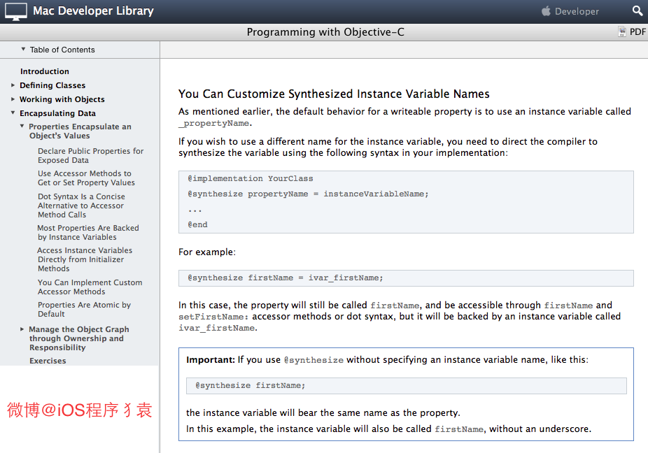
如果使用了属性的话，那么编译器就会自动编写访问属性所需的方法，此过程叫做“自动合成”( auto synthesis)。需要强调的是，这个过程由编译器在编译期执行，所以编辑器里看不到这些“合成方法” (synthesized method)的源代码。除了生成方法代码之外，编译器还要自动向类中添加适当类型的实例变量，并且在属性名前面加下划线，以此作为实例变量的名字。
@interface CYLPerson : NSObject @property NSString *firstName; @property NSString *lastName; @end
在上例中，会生成两个实例变量，其名称分别为 _firstName与_lastName。也可以在类的实现代码里通过@synthesize语法来指定实例变量的名字:
@implementation CYLPerson @synthesize firstName = _myFirstName; @synthesize lastName = _myLastName; @end
上述语法会将生成的实例变量命名为_myFirstName与_myLastName，而不再使用默认的名字。一般情况下无须修改默认的实例变量名，但是如果你不喜欢以下划线来命名实例变量，那么可以用这个办法将其改为自己想要的名字。笔者还是推荐使用默认的命名方案，因为如果所有人都坚持这套方案，那么写出来的代码大家都能看得懂。
总结下@synthesize合成实例变量的规则，有以下几点：
1）如果指定了成员变量的名称,会生成一个指定的名称的成员变量,
2）如果这个成员已经存在了就不再生成了.
3）如果是 @synthesize foo; 还会生成一个名称为foo的成员变量，也就是说：如果没有指定成员变量的名称会自动生成一个属性同名的成员变量。
4）如果是 @synthesize foo = _foo; 就不会生成成员变量了.
假如property名为foo，存在一个名为_foo的实例变量，那么还会自动合成新变量么？ 不会。如下图：
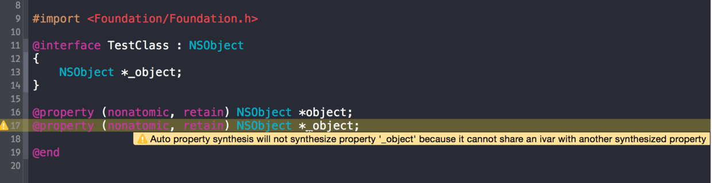
15. 在有了自动合成属性实例变量之后，@synthesize还有哪些使用场景？
回答这个问题前，我们要搞清楚一个问题，什么情况下不会autosynthesis（自动合成）？
同时重写了setter和getter时
重写了只读属性的getter时
使用了@dynamic时
在 @protocol 中定义的所有属性
在 category 中定义的所有属性
重载的属性
当你在子类中重载了父类中的属性，你必须 使用@synthesize来手动合成ivar。
除了后三条，对其他几个我们可以总结出一个规律：当你想手动管理@property的所有内容时，你就会尝试通过实现@property的所有“存取方法”（the accessor methods）或者使用@dynamic来达到这个目的，这时编译器就会认为你打算手动管理@property，于是编译器就禁用了autosynthesis（自动合成）。
因为有了autosynthesis（自动合成），大部分开发者已经习惯不去手动定义ivar，而是依赖于autosynthesis（自动合成），但是一旦你需要使用ivar，而autosynthesis（自动合成）又失效了，如果不去手动定义ivar，那么你就得借助@synthesize来手动合成ivar。
其实，@synthesize语法还有一个应用场景，但是不太建议大家使用：
可以在类的实现代码里通过@synthesize语法来指定实例变量的名字:
@implementation CYLPerson @synthesize firstName = _myFirstName; @synthesize lastName = _myLastName; @end
上述语法会将生成的实例变量命名为_myFirstName与_myLastName，而不再使用默认的名字。一般情况下无须修改默认的实例变量名，但是如果你不喜欢以下划线来命名实例变量，那么可以用这个办法将其改为自己想要的名字。笔者还是推荐使用默认的命名案，因为如果所有人都坚持这套方案，那么写出来的代码大家都能看得懂。
举例说明：应用场景：
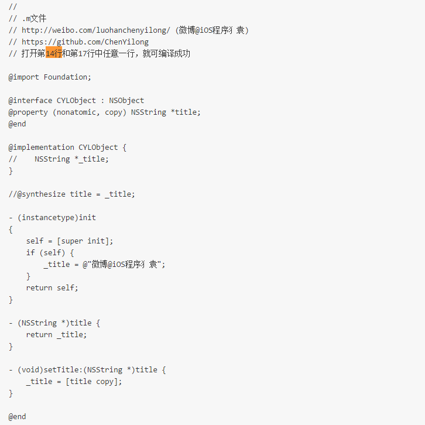
结果编译器报错：
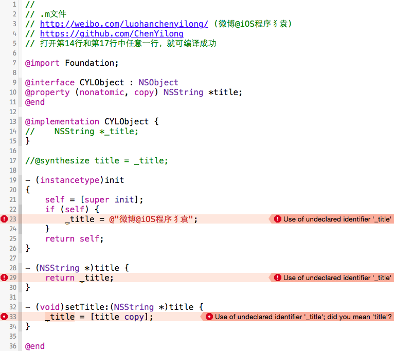
当你同时重写了setter和getter时，系统就不会生成ivar（实例变量/成员变量）。这时候有两种选择：
要么如第14行：手动创建ivar
要么如第17行：使用@synthesize foo = _foo; ，关联@property与ivar。
更多信息，请戳- 》 When should I use @synthesize explicitly?
16. objc中向一个nil对象发送消息将会发生什么？
在Objective-C中向nil发送消息是完全有效的——只是在运行时不会有任何作用:
如果一个方法返回值是一个对象，那么发送给nil的消息将返回0(nil)。例如：
Person * motherInlaw = [[aPerson spouse] mother];
如果spouse对象为nil，那么发送给nil的消息mother也将返回nil。
1）如果方法返回值为指针类型，其指针大小为小于或者等于sizeof(void*)，float，double，long double 或者long long的整型标量，发送给nil的消息将返回0。
2）如果方法返回值为结构体,发送给nil的消息将返回0。结构体中各个字段的值将都是0。
3）如果方法的返回值不是上述提到的几种情况，那么发送给nil的消息的返回值将是未定义的。
具体原因如下：
objc是动态语言，每个方法在运行时会被动态转为消息发送，即：objc_msgSend(receiver, selector)。
那么，为了方便理解这个内容，还是贴一个objc的源代码：
// runtime.h（类在runtime中的定义） // http://weibo.com/luohanchenyilong/ // https://github.com/ChenYilong
struct objc_class {
Class isa OBJC_ISA_AVAILABILITY; //isa指针指向Meta Class，因为Objc的类的本身也是一个Object，为了处理这个关系，runtime就创造了Meta Class，当给类发送[NSObject alloc]这样消息时，实际上是把这个消息发给了Class Object
#if !__OBJC2__
Class super_class OBJC2_UNAVAILABLE; // 父类
const char *name OBJC2_UNAVAILABLE; // 类名
long version OBJC2_UNAVAILABLE; // 类的版本信息，默认为0
long info OBJC2_UNAVAILABLE; // 类信息，供运行期使用的一些位标识
long instance_size OBJC2_UNAVAILABLE; // 该类的实例变量大小
struct objc_ivar_list *ivars OBJC2_UNAVAILABLE; // 该类的成员变量链表
struct objc_method_list **methodLists OBJC2_UNAVAILABLE; // 方法定义的链表
struct objc_cache *cache OBJC2_UNAVAILABLE; // 方法缓存，对象接到一个消息会根据isa指针查找消息对象，这时会在method Lists中遍历，如果cache了，常用的方法调用时就能够提高调用的效率。
struct objc_protocol_list *protocols OBJC2_UNAVAILABLE; // 协议链表
#endif
} OBJC2_UNAVAILABLE;objc在向一个对象发送消息时，runtime库会根据对象的isa指针找到该对象实际所属的类，然后在该类中的方法列表以及其父类方法列表中寻找方法运行，然后在发送消息的时候，objc_msgSend方法不会返回值，所谓的返回内容都是具体调用时执行的。 那么，回到本题，如果向一个nil对象发送消息，首先在寻找对象的isa指针时就是0地址返回了，所以不会出现任何错误。
17. objc中向一个对象发送消息[obj foo]和objc_msgSend()函数之间有什么关系？
具体原因同上题：该方法编译之后就是objc_msgSend()函数调用.如果我没有记错的大概是这样的：
((void ()(id, SEL))(void )objc_msgSend)((id)obj, sel_registerName("foo"));也就是说：
[obj foo];在objc动态编译时，会被转意为：objc_msgSend(obj, @selector(foo));。
18. 什么时候会报unrecognized selector的异常？
简单来说：当该对象上某个方法,而该对象上没有实现这个方法的时候， 可以通过“消息转发”进行解决。
简单的流程如下，在上一题中也提到过：objc是动态语言，每个方法在运行时会被动态转为消息发送，即：objc_msgSend(receiver, selector)。
objc在向一个对象发送消息时，runtime库会根据对象的isa指针找到该对象实际所属的类，然后在该类中的方法列表以及其父类方法列表中寻找方法运行，如果，在最顶层的父类中依然找不到相应的方法时，程序在运行时会挂掉并抛出异常unrecognized selector sent to XXX 。但是在这之前，objc的运行时会给出三次拯救程序崩溃的机会：
Method resolution
objc运行时会调用+resolveInstanceMethod:或者 +resolveClassMethod:，让你有机会提供一个函数实现。如果你添加了函数并返回 YES，那运行时系统就会重新启动一次消息发送的过程，如果 resolve 方法返回 NO ，运行时就会移到下一步，消息转发（Message Forwarding）。
Fast forwarding
如果目标对象实现了-forwardingTargetForSelector:，Runtime 这时就会调用这个方法，给你把这个消息转发给其他对象的机会。 只要这个方法返回的不是nil和self，整个消息发送的过程就会被重启，当然发送的对象会变成你返回的那个对象。否则，就会继续Normal Fowarding。 这里叫Fast，只是为了区别下一步的转发机制。因为这一步不会创建任何新的对象，但下一步转发会创建一个NSInvocation对象，所以相对更快点。
Normal forwarding
这一步是Runtime最后一次给你挽救的机会。首先它会发送-methodSignatureForSelector:消息获得函数的参数和返回值类型。如果-methodSignatureForSelector:返回nil，Runtime则会发出-doesNotRecognizeSelector:消息，程序这时也就挂掉了。如果返回了一个函数签名，Runtime就会创建一个NSInvocation对象并发送-forwardInvocation:消息给目标对象。
19. 一个objc对象如何进行内存布局？（考虑有父类的情况）
所有父类的成员变量和自己的成员变量都会存放在该对象所对应的存储空间中.
每一个对象内部都有一个isa指针,指向他的类对象,类对象中存放着本对象的
1）对象方法列表（对象能够接收的消息列表，保存在它所对应的类对象中）
2）成员变量的列表
3）属性列表
它内部也有一个isa指针指向元对象(meta class),元对象内部存放的是类方法列表,类对象内部还有一个superclass的指针,指向他的父类对象。
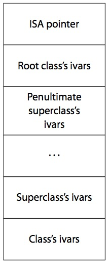
1）根对象就是NSobject，它的superclass指针指向nil。
2）类对象既然称为对象，那它也是一个实例。类对象中也有一个isa指针指向它的元类(meta class)，即类对象是元类的实例。元类内部存放的是类方法列表，根元类的isa指针指向自己，superclass指针指向NSObject类。
如图:
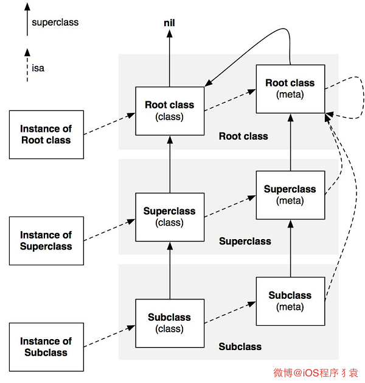
20. 一个objc对象的isa的指针指向什么？有什么作用？
指向他的类对象,从而可以找到对象上的方法
21. 下面的代码输出什么？
@implementation Son : Father
- (id)init
{
self = [super init];
if (self) {
NSLog(@"%@", NSStringFromClass([self class]));
NSLog(@"%@", NSStringFromClass([super class]));
}
return self;
}
@end答案：
都输出 Son
NSStringFromClass([self class]) = Son NSStringFromClass([super class]) = Son
解惑：
（以下解惑部分摘自微博@Chun_iOS的博文刨根问底Objective－C Runtime（1）－ Self & Super）
这个题目主要是考察关于objc中对 self 和 super 的理解。
self 是类的隐藏参数，指向当前调用方法的这个类的实例。而 super 是一个 Magic Keyword， 它本质是一个编译器标示符，和 self 是指向的同一个消息接受者。
上面的例子不管调用[self class]还是[super class]，接受消息的对象都是当前 Son ＊xxx 这个对象。而不同的是，super是告诉编译器，调用 class 这个方法时，要去父类的方法，而不是本类里的。
当使用 self 调用方法时，会从当前类的方法列表中开始找，如果没有，就从父类中再找；而当使用 super 时，则从父类的方法列表中开始找。然后调用父类的这个方法。
真的是这样吗？继续看：
使用clang重写命令:
$ clang -rewrite-objc test.m
发现上述代码被转化为:
NSLog((NSString *)&__NSConstantStringImpl__var_folders_gm_0jk35cwn1d3326x0061qym280000gn_T_main_a5cecc_mi_0, NSStringFromClass(((Class (*)(id, SEL))(void *)objc_msgSend)((id)self, sel_registerName("class"))));
NSLog((NSString *)&__NSConstantStringImpl__var_folders_gm_0jk35cwn1d3326x0061qym280000gn_T_main_a5cecc_mi_1, NSStringFromClass(((Class (*)(__rw_objc_super *, SEL))(void *)objc_msgSendSuper)((__rw_objc_super){ (id)self, (id)class_getSuperclass(objc_getClass("Son")) }, sel_registerName("class"))));从上面的代码中，我们可以发现在调用 [self class] 时，会转化成 objc_msgSend函数。看下函数定义：
id objc_msgSend(id self, SEL op, ...)
我们把 self 做为第一个参数传递进去。
而在调用 [super class]时，会转化成 objc_msgSendSuper函数。看下函数定义:
id objc_msgSendSuper(struct objc_super *super, SEL op, ...)
第一个参数是 objc_super 这样一个结构体，其定义如下:
struct objc_super {
__unsafe_unretained id receiver;
__unsafe_unretained Class super_class;
};结构体有两个成员，第一个成员是 receiver, 类似于上面的 objc_msgSend函数第一个参数self 。第二个成员是记录当前类的父类是什么。
所以，当调用 ［self class] 时，实际先调用的是 objc_msgSend函数，第一个参数是 Son当前的这个实例，然后在 Son 这个类里面去找 - (Class)class这个方法，没有，去父类 Father里找，也没有，最后在 NSObject类中发现这个方法。而 - (Class)class的实现就是返回self的类别，故上述输出结果为 Son。
objc Runtime开源代码对- (Class)class方法的实现:
- (Class)class {
return object_getClass(self);
}而当调用 [super class]时，会转换成objc_msgSendSuper函数。第一步先构造 objc_super 结构体，结构体第一个成员就是 self 。 第二个成员是 (id)class_getSuperclass(objc_getClass(“Son”)) , 实际该函数输出结果为 Father。 第二步是去 Father这个类里去找 - (Class)class，没有，然后去NSObject类去找，找到了。最后内部是使用 objc_msgSend(objc_super->receiver, @selector(class))去调用， 此时已经和[self class]调用相同了，故上述输出结果仍然返回 Son。
22. runtime如何通过selector找到对应的IMP地址？（分别考虑类方法和实例方法）
每一个类对象中都一个方法列表,方法列表中记录着方法的名称,方法实现,以及参数类型,其实selector本质就是方法名称,通过这个方法名称就可以在方法列表中找到对应的方法实现.
23. 使用runtime Associate方法关联的对象，需要在主对象dealloc的时候释放么？
在ARC下不需要
在MRC中,对于使用retain或copy策略的需要
无论在MRC下还是ARC下均不需要
2011年版本的Apple API 官方文档 - Associative References 一节中有一个MRC环境下的例子：
// 在MRC下，使用runtime Associate方法关联的对象，不需要在主对象dealloc的时候释放 // http://weibo.com/luohanchenyilong/ (微博@iOS程序犭袁) // https://github.com/ChenYilong // 摘自2011年版本的Apple API 官方文档 - Associative References static char overviewKey; NSArray *array = [[NSArray alloc] initWithObjects:@"One", @"Two", @"Three", nil]; // For the purposes of illustration, use initWithFormat: to ensure // the string can be deallocated NSString *overview = [[NSString alloc] initWithFormat:@"%@", @"First three numbers"]; objc_setAssociatedObject ( array, &overviewKey;, overview, OBJC_ASSOCIATION_RETAIN ); [overview release]; // (1) overview valid [array release]; // (2) overview invalid
文档指出
At point 1, the string overview is still valid because the OBJC_ASSOCIATION_RETAIN policy specifies that the array retains the associated object. When the array is deallocated, however (at point 2), overview is released and so in this case also deallocated.
我们可以看到，在[array release];之后，overview就会被release释放掉了。
既然会被销毁，那么具体在什么时间点？
根据 WWDC 2011, Session 322 (第36分22秒) 中发布的内存销毁时间表，被关联的对象在生命周期内要比对象本身释放的晚很多。它们会在被 NSObject -dealloc 调用的 object_dispose() 方法中释放。
对象的内存销毁时间表，分四个步骤：
// 对象的内存销毁时间表 // http://weibo.com/luohanchenyilong/ (微博@iOS程序犭袁) // https://github.com/ChenYilong // 根据 WWDC 2011, Session 322 (36分22秒)中发布的内存销毁时间表 1. 调用 -release ：引用计数变为零 * 对象正在被销毁，生命周期即将结束. * 不能再有新的 __weak 弱引用， 否则将指向 nil. * 调用 [self dealloc] 2. 父类 调用 -dealloc * 继承关系中最底层的父类 在调用 -dealloc * 如果是 MRC 代码 则会手动释放实例变量们（iVars） * 继承关系中每一层的父类 都在调用 -dealloc 3. NSObject 调 -dealloc * 只做一件事：调用 Objective-C runtime 中的 object_dispose() 方法 4. 调用 object_dispose() * 为 C++ 的实例变量们（iVars）调用 destructors * 为 ARC 状态下的 实例变量们（iVars） 调用 -release * 解除所有使用 runtime Associate方法关联的对象 * 解除所有 __weak 引用 * 调用 free()
对象的内存销毁时间表：参考链接。
24. objc中的类方法和实例方法有什么本质区别和联系？
类方法：
类方法是属于类对象的
类方法只能通过类对象调用
类方法中的self是类对象
类方法可以调用其他的类方法
类方法中不能访问成员变量
类方法中不定直接调用对象方法
实例方法：
实例方法是属于实例对象的
实例方法只能通过实例对象调用
实例方法中的self是实例对象
实例方法中可以访问成员变量
实例方法中直接调用实例方法
实例方法中也可以调用类方法(通过类名)
未完待续~~~~
下一篇文章将发布在 这里